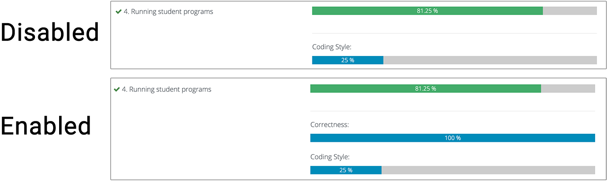

Configuration¶
INGInious Coding Style is highly configurable and provides granular control of the majority of its features. Despite this, extensive configuration is not necessary, as the plugin tries to implement sensible defaults, and therefore should just work straight out of the box.
Minimal Configuration¶
The following YAML snippet provides the default plugin configuration, and is a good starting point for exploring the plugin's functionality:
plugins:
- plugin_module: inginious_coding_style
name: "INGInious Coding Style"
The minimal configuration enables all default categories:
comments
modularity
structure
idiomaticity.
See Default Categories for more information about the default categories.
Full Configuration¶
Below is an example of a configuration making use of all available configuration options.
plugins:
- plugin_module: inginious_coding_style
name: "INGInious Coding Style"
enabled:
# This enables all default categories + 1 custom category
- comments
- modularity
- structure
- idiomaticity
- coolness # Our custom category
categories:
# This is a definition for a new category
- id: coolness
name: Coolness
description: How cool the code looks B-)
# This redefines a default category
- id: comments
name: Kommentering
description: Hvor godt kommentert koden er.
submission_query:
header: CSG
priority: 3000
button: true
weighted_mean:
enabled: true
weighting: 0.25
round: true
round_digits: 2
task_list_bars:
total_grade:
enabled: true
label: Grade
base_grade:
enabled: true
label: Completion
style_grade:
enabled: true
label: Coding Style
show_graders: false
Parameters¶
name¶
Display name of the plugin
default: 'INGInious Coding Style'
type: string
required: False
enabled¶
Which coding style categories to enable. Omitting this parameter enables all default categories (comments
modularity
structure
idiomaticity
).
default: ['comments', 'modularity', 'structure', 'idiomaticity']
type: array
items: {'type': 'string'}
required: False
categories¶
Define new grading categories or modify default grading categories.
Each category has the following parameters:
id¶
Unique ID of the category.
type: string
required: True
name¶
Display name of category. Defaults to id.title() if omitted.
type: string
required: False
description¶
Description of category. This should describe the criteria used for grading.
type: string
required: True
submission_query¶
Settings for the submissions query results table (/admin/<courseid>/submissions).
header¶
The header text for the plugin's column in the query results table.
default: 'CSG'
type: string
required: False
button¶
Adds an additional button to each search result row that links to the submission's coding style grading page.
default: True
type: boolean
required: False
priority¶
The priority of the plugin hook. The priority must be a number that is unique to the plugin in order to avoid column ordering issues. In cases where the plugin's header does not match its corresponding column in the table body, try to change priority to a different number. Given the low number of INGInious plugins in existence, this should virtually never happen, though.
default: 3000
type: integer
required: False
weighted_mean¶
Calculates a new grade for submissions after they have received coding style grades by finding the mean of automated INGInious grade and coding style grades:
new_grade = (automated_grade * (1 - weighting)) + (coding_style_grade_mean * weighting)
Example
>>> automated_grade = 100
>>> mean_style_grade = 80
>>> weighting = 0.25
>>> new_grade = (automated_grade * (1-weighting)) + (mean_style_grade * weighting)
>>> new_grade
95.0
enabled¶
Enable weighted mean grade calculation.
default: False
type: boolean
required: False
weighting¶
How much of the final grade the coding style grades should make up.
Example¶
weighting = 0.25
base_grade_weight = 1 - weighting
base_grade_weight == 0.75
When weighting is set to 0.25, the style grades will make up 25% of the submission's final grade, while its base grade will make up the remaining 75%.
default: 0.25
minimum: 0.0
maximum: 1.0
type: number
required: False
round¶
Whether to round the weighted mean grade or not.
default: True
type: boolean
required: False
round_digits¶
Number of digits after decimal point to round to. Has no effect if round is disabled.
default: 2
minimum: 0
type: integer
required: False
task_list_bars¶
Settings for the various bars displayed on the task list.
total_grade¶
The bar displaying the submission's final grade. This bar cannot be disabled, but its label can be.
enabled¶
Visibility of the total grade bar's label.
default: True
type: boolean
required: False
label¶
Label for the total grade bar.
default: True
type: boolean
required: False
base_grade¶
The bar displaying the submission's base grade (the grade given by the automatic INGInious grader). This bar can be disabled in its entirety.
enabled¶
Visibility of the base grade bar. Has no effect if weighted_mean is disabled.
default: True
type: boolean
required: False
label¶
Label for the total grade bar.
default: True
type: boolean
required: False
style_grade¶
The bar displaying the submission's mean coding style grade. This bar can be disabled in its entirety.
enabled¶
Visibility of the coding style grade bar.
default: True
type: boolean
required: False
label¶
Label for the coding style grade bar.
default: True
type: boolean
required: False

show_graders¶
Display a list of tutors/admins who have graded the submission in the sidebar of a student submissions coding style grade page (/submissions/<submissionid>/codingstyle).
default: False
type: boolean
required: False
Default Categories¶
INGInious Coding Style comes with 4 default grading categories. If you want to change the names or descriptions of these categories, you can override them in your INGInious configuration file.
Attention
The id parameter of a category must match the default category's ID if you wish to overwrite a default category. If you simply wish to disable a default category, omit its ID from the top-level enabled parameter.
The following is a YAML snippet that includes the definitions for all default categories, which can be added to the plugin configuration should you wish to expand on the existing decriptions or otherwise modify the categories:
- id: comments
name: Comments
description: Appropriate use of comments.
- id: modularity
name: Modularity
description: Modularity of the code, i.e. appropriate use of functions and encapsulation.
- id: structure
name: Structure
description: The quality of the code's structure, i.e. comprehensible variable names,
nesting, and program flow.
- id: idiomaticity
name: Idiomaticity
description: How idiomatic the code is, i.e. appropriate use of language-specific
constructs (list comprehensions, enumerate(), etc. for Python).